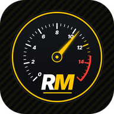

RideMind
Όροι χρήσης
Τελευταία ενημέρωση: 15 Νοεμβρίου 2026 (RideMind Pro: πλήρης περιγραφή, όρια Παρέας) · English · Español
Οι παρόντες όροι ισχύουν για την εφαρμογή RideMind και τον ιστότοπο ridemind.eu («η υπηρεσία»), που αναπτύσσονται από ιδιώτη προγραμματιστή στην Ελλάδα. Επικοινωνία: info@ridemind.eu. Χρησιμοποιώντας την υπηρεσία αποδέχεσαι τους όρους. Αν δεν συμφωνείς, μην τη χρησιμοποιείς.
1. Τι προσφέρει η εφαρμογή
Το RideMind σε βοηθά να καταγράφεις βόλτες, καύσιμα, service και έξοδα της μοτοσυκλέτας σου, να βλέπεις την πρόγνωση του καιρού και, με συμβατό αντάπτορα OBD, ενδείξεις του κινητήρα. Οι πληροφορίες είναι ενδεικτικές και βοηθητικές.
2. Ασφάλεια στον δρόμο
- Μη χειρίζεσαι το κινητό ενώ οδηγείς. Ρύθμισε την εφαρμογή πριν ξεκινήσεις και τήρησε πάντα τον Κώδικα Οδικής Κυκλοφορίας.
- Η ανίχνευση πτώσης είναι βοηθητική λειτουργία και δεν είναι εγγυημένο ότι θα λειτουργήσει σε κάθε περίπτωση (π.χ. χωρίς σήμα, μπαταρία ή άδειες). Δεν αντικαθιστά τις υπηρεσίες έκτακτης ανάγκης (112).
- Οι ενδείξεις OBD, οι υπενθυμίσεις service, η κλίση, η ταχύτητα και ο καιρός μπορεί να μην είναι ακριβείς. Δεν αντικαθιστούν τον έλεγχο από μηχανικό ούτε την προσωπική σου κρίση.
- Η σύνδεση αντάπτορα OBD γίνεται με δική σου ευθύνη. Χρησιμοποίησε αξιόπιστο αντάπτορα και μην τον αφήνεις συνδεδεμένο αν εκφορτίζει τη μπαταρία.
3. Λογαριασμός
Για ορισμένες λειτουργίες χρειάζεται λογαριασμός με email. Είσαι υπεύθυνος για την ασφάλεια του κωδικού σου. Μπορείς να διαγράψεις τον λογαριασμό σου οποτεδήποτε (δες Διαγραφή λογαριασμού). Η εφαρμογή απευθύνεται σε άτομα 16 ετών και άνω. Αν είσαι κάτω από 16, δεν επιτρέπεται να δημιουργήσεις λογαριασμό.
4. RideMind Pro
Το RideMind Pro είναι εφάπαξ αγορά (όχι συνδρομή, χωρίς αυτόματες ανανεώσεις) που ισχύει για τον λογαριασμό σου. Η τιμή εμφανίζεται στο Google Play πριν ολοκληρώσεις την αγορά. Αυτή τη στιγμή η αγορά γίνεται μέσω του Google Play (εφαρμογή Android). Όταν το Pro είναι ενεργό στον λογαριασμό σου, ισχύει σε κάθε συσκευή όπου συνδέεσαι με αυτόν.
Τι περιλαμβάνει το Pro
- Όργανα και σύνδεση OBD: σύνδεση με συμβατό adapter (για μηχανές Euro 5/5+), όργανα live, κωδικοί βλάβης, αυτόματη βόλτα και καταγραφή.
- Βόλτες: απεριόριστες αποθηκευμένες βόλτες, πλήρες ιστορικό και γράφημα βόλτας.
- Μηχανές: απεριόριστος αριθμός μηχανών στο γκαράζ.
- Backup στο cloud: προαιρετικό αντίγραφο των δεδομένων σου στον λογαριασμό σου, για επαναφορά σε νέο κινητό.
- Παρέα: δημιουργία έως 2 παρεών και συμμετοχή σε έως 5 παρέες που έχουν δημιουργήσει άλλοι.
Τι ισχύει στη δωρεάν χρήση: έως 5 αποθηκευμένες βόλτες τον μήνα (η διαγραφή βόλτας δεν ελευθερώνει θέση· μετά το όριο μπορείς να ξεκινήσεις βόλτα κανονικά, με ανίχνευση πτώσης και SOS, αλλά η βόλτα δεν αποθηκεύεται, και τα χιλιόμετρα μπαίνουν στο κοντέρ), εμφάνιση των πιο πρόσφατων βολτών στο ιστορικό, μία μηχανή, μία παρέα συνολικά (είτε δική σου είτε άλλου), και όχι σύνδεση OBD, γράφημα βόλτας και backup στο cloud. Όλες οι υπόλοιπες λειτουργίες, μαζί με την ασφάλεια (SOS, ανίχνευση πτώσης, κάρτα ανάγκης, πίεση ελαστικών), είναι και παραμένουν δωρεάν. Τα όρια της Παρέας ελέγχονται από τον server μας και ισχύουν και για τις προσκλήσεις και τα αιτήματα συμμετοχής: αν ο φίλος που προσκαλείς έχει φτάσει το όριό του, η πρόσκληση δεν ολοκληρώνεται.
Δωρεάν δοκιμή: δίνεται μία φορά ανά λογαριασμός (και δεν δίνεται ξανά ούτε μετά από διαγραφή και επανεγγραφή) και διαρκεί 3 ημέρες. Στη διάρκειά της έχεις όλα τα χαρακτηριστικά του Pro, μαζί με τα όρια της Παρέας του Pro. Μόλις λήξει, ισχύουν ξανά τα όρια της δωρεάν χρήσης. Τα δεδομένα σου δεν διαγράφονται: βόλτες πέρα από τις πιο πρόσφατες κρύβονται μέχρι να ενεργοποιηθεί ξανά το Pro, και οι παρέες που ήδη έχεις δεν διαγράφονται, αλλά δεν μπορείς να δημιουργήσεις ή να μπεις σε νέες πάνω από το όριο.
Founding Riders και δώρα: οι λογαριασμοί που δημιουργήθηκαν ως την ημερομηνία που αναγράφεται στην εφαρμογή (Ρυθμίσεις › RideMind Pro) έχουν Pro χωρίς χρέωση για όσο ο λογαριασμός υπάρχει. Μπορούμε επίσης να δωρίσουμε Pro σε συγκεκριμένους λογαριασμούς. Το Pro-δώρο δεν είναι αγορά και δεν έχει αξία επιστροφής χρημάτων.
Πληρωμές και επιστροφές: η πληρωμή, οι επιστροφές χρημάτων και οι ακυρώσεις γίνονται σύμφωνα με τους όρους του Google Play και τα δικαιώματά σου ως καταναλωτή· αν μια αγορά επιστραφεί ή ακυρωθεί, το Pro αφαιρείται. Η αγορά συνδέεται με έναν μόνο λογαριασμό RideMind. Αν διαγράψεις τον λογαριασμό σου, χάνεις το Pro που είχε ο λογαριασμός αυτός.
Αλλαγές: οι λειτουργίες του Pro και τα όρια της δωρεάν χρήσης μπορεί να αλλάξουν· τις ουσιαστικές αλλαγές θα τις ανακοινώνουμε μέσα στην εφαρμογή ή στον ιστότοπο (δες και την ενότητα «Αλλαγές»).
5. Πνευματική ιδιοκτησία
Το όνομα RideMind, το λογότυπο, ο σχεδιασμός, τα κείμενα και ο κώδικας της εφαρμογής ανήκουν στον δημιουργό της. Με την επιφύλαξη παντός δικαιώματος. Απαγορεύεται η αντιγραφή, τροποποίηση ή διανομή τους χωρίς γραπτή άδεια.
6. Περιορισμός ευθύνης
Η υπηρεσία παρέχεται «ως έχει». Στον βαθμό που επιτρέπει ο νόμος, δεν ευθυνόμαστε για ζημίες που προκύπτουν από τη χρήση ή την αδυναμία χρήσης της, από ανακριβείς ενδείξεις ή από διακοπές της υπηρεσίας. Η ευθύνη μας για δόλο ή βαρεία αμέλεια, καθώς και για σωματική βλάβη ή θάνατο, δεν αποκλείεται ούτε περιορίζεται. Οι όροι αυτοί δεν περιορίζουν τα δικαιώματα που σου δίνει ο νόμος ως καταναλωτή.
7. Παρέα (κοινότητα αναβατών)
Η Παρέα είναι για άτομα 18 ετών και άνω. Είναι χώρος όπου οι αναβάτες κανονίζουν βόλτες: η RideMind δεν διοργανώνει βόλτες και δεν ελέγχει τους χρήστες ή τις συναντήσεις που γίνονται μέσω αυτής. Συμμετέχεις σε βόλτες με δική σου ευθύνη και είσαι υπεύθυνος για την οδήγηση, τον εξοπλισμό σου και τον Κώδικα Οδικής Κυκλοφορίας. Για την ασφάλειά σου, συναντάς αγνώστους με προσοχή, σε δημόσιο χώρο και ποτέ στο σπίτι κανενός.
Το περιεχόμενο που γράφεις (όνομα, τίτλοι βολτών, ανακοινώσεις, φωτογραφία) δεν πρέπει να είναι προσβλητικό, απειλητικό, ρατσιστικό, σεξουαλικά απαράδεκτο, παρενοχλητικό, spam ή διαφήμιση, ούτε να παραποιεί άλλο άτομο ή την ομάδα της RideMind. Δεν επιτρέπονται ονόματα όπως «RideMind» ή «Admin». Δεν δημοσιεύεις στοιχεία άλλων χωρίς άδεια, ούτε τη διεύθυνση του σπιτιού σου ως σημείο συνάντησης.
Μπορείς να αναφέρεις ή να αποκλείσεις οποιονδήποτε χρήστη οποιαδήποτε στιγμή. Η ομάδα της RideMind μπορεί να αφαιρέσει περιεχόμενο ή να αποκλείσει χρήστη από την Παρέα, αμέσως, όταν παραβιάζονται οι όροι ή υπάρχει κίνδυνος για άλλους. Θα σου στέλνουμε email με τον λόγο της απόφασης. Αν διαφωνείς, γράψε μας στο info@ridemind.eu και θα την επανεξετάσουμε. Η RideMind δεν ευθύνεται για τη συμπεριφορά των χρηστών, για βόλτες που οργανώνουν οι ίδιοι ή για ζημιές που προκύπτουν από συναντήσεις, στον βαθμό που επιτρέπει ο νόμος (τα δικαιώματά σου ως καταναλωτή δεν επηρεάζονται). Μπορείς να διαγράψεις το προφίλ σου ανά πάσα στιγμή.
Μηνύματα μεταξύ φίλων: μπορείς να στέλνεις μηνύματα μόνο σε αποδεκτούς φίλους. Τα μηνύματα δεν πρέπει να περιέχουν περιεχόμενο που απαγορεύεται παραπάνω, απειλές, παρενόχληση ή spam, και απαγορεύεται η αποστολή μηνυμάτων σε άτομα που σε έχουν αποκλείσει. Τα μηνύματα διαγράφονται αυτόματα μετά από 7 ημέρες, δεν είναι κρυπτογραφημένα από άκρο σε άκρο και δεν πρέπει να τα χρησιμοποιείς για προσωπικά ή οικονομικά δεδομένα, κωδικούς ή έκτακτη ανάγκη (για έκτακτη ανάγκη χρησιμοποίησε το 112 και το SOS της εφαρμογής). Μπορείς να αναφέρεις ένα μήνυμα: τότε τα τελευταία μηνύματα της συνομιλίας βλέπει ο διαχειριστής για τον έλεγχο της αναφοράς.
8. Αλλαγές
Μπορεί να ενημερώνουμε τους όρους. Για σημαντικές αλλαγές θα ενημερώνουμε μέσα από την εφαρμογή ή τον ιστότοπο. Η συνέχιση της χρήσης σημαίνει αποδοχή των νέων όρων.
9. Εφαρμοστέο δίκαιο
Οι όροι διέπονται από το ελληνικό δίκαιο. Για οποιαδήποτε διαφορά, γράψε μας πρώτα στο info@ridemind.eu για να βρούμε λύση.
Terms of use (English)
These terms apply to the RideMind app and the ridemind.eu website, developed by an independent developer in Greece (contact: info@ridemind.eu). By using the service you accept them.
- Safety: do not handle your phone while riding. Crash detection is an aid and is not guaranteed to work in every situation; it does not replace emergency services (112). OBD readings, service reminders, lean angle, speed and weather may be inaccurate and do not replace a mechanic or your own judgement. Connecting an OBD adapter is at your own risk.
- Account: you are responsible for keeping your password safe and can delete your account at any time (Delete account). The app is for people aged 16 and over; if you are under 16 you may not create an account.
- RideMind Pro: a one-time purchase (not a subscription, no automatic renewals) that applies to your account; the price is shown in Google Play before you buy. Purchases are currently made through Google Play (the Android app); once Pro is active on your account it applies on every device you sign in on. Pro includes: OBD connection and gauges (Euro 5/5+ motorcycles), unlimited saved rides with full history and the ride chart, unlimited motorcycles, optional cloud backup, and in the Crew the ability to create up to 2 crews and join up to 5 crews created by others. Free use includes: up to 5 saved rides per month (deleting a ride does not free a slot; after the limit you can still start a ride with crash detection and SOS, but it is not saved and the kilometres still count on the odometer), the most recent rides in the history, one motorcycle, one crew in total (created by you or by someone else), and no OBD connection, ride chart or cloud backup. All other features, including safety (SOS, crash detection, emergency card, tyre pressure), are and remain free. Crew limits are enforced by our server, including for invitations and join requests: if the friend you invite has reached their limit, the invitation cannot be completed. Free trial: given once per account (not again after deleting and re-creating an account), lasts 3 days and includes all Pro features and the Pro Crew limits; when it ends the free limits apply again. Your data is not deleted: older rides are hidden until Pro is active again, and crews you already have are kept, but you cannot create or join new ones above the free limit. Founding Riders and gifts: accounts created up to the date we set (shown in the app under Settings › RideMind Pro) have Pro at no charge for as long as the account exists, and we may gift Pro to specific accounts; a gifted Pro is not a purchase and has no refund value. Payments and refunds follow Google Play's terms and your statutory consumer rights; Pro is removed if a purchase is refunded or cancelled. A purchase is linked to a single RideMind account; if you delete your account you lose the Pro it had. Pro features and the free limits may change; we will announce material changes in the app or on the website.
- Intellectual property: the RideMind name, logo, design, texts and code belong to their creator. All rights reserved.
- Liability: the service is provided “as is”. To the extent permitted by law we are not liable for damage arising from its use, inaccurate readings or interruptions. Liability for intent or gross negligence, and for personal injury or death, is not excluded or limited. Your statutory consumer rights are not affected.
- Crew (rider community): for people aged 18 and over. The Crew is a place for riders to arrange rides; RideMind does not organise rides and does not vet users or the meetups that happen through it. You join rides at your own risk and are responsible for your riding, equipment and compliance with traffic law; meet people you do not know with care, in a public place and never at anyone's home. Content you post must not be offensive, threatening, racist, sexually explicit, harassing, spam or advertising, and must not impersonate another person or the RideMind team (names like “RideMind” or “Admin” are not allowed). Do not publish other people's details without permission or your home address as a meeting point. You can report or block any user at any time; the RideMind team may remove content or ban a user from the Crew immediately when these terms are broken or others may be at risk. We will email you the reason for the decision; if you disagree, write to info@ridemind.eu and we will review it. RideMind is not responsible for users' behaviour, rides they organise or damage arising from meetups, to the extent permitted by law; your statutory consumer rights are not affected.
- Messages between friends: you can message accepted friends only. Messages must not contain content prohibited above, threats, harassment or spam, and you must not message people who have blocked you. Messages are deleted automatically after 7 days, are not end-to-end encrypted, and must not be used for personal or financial data, passwords or emergencies (in an emergency use 112 and the app’s SOS). You can report a message; the administrator then sees the latest messages of the conversation to review the report.
- Changes & law: we may update these terms; Greek law applies. Please contact info@ridemind.eu first about any dispute.
Condiciones de uso (Español)
Estas condiciones se aplican a la app RideMind y al sitio ridemind.eu, desarrollados por un desarrollador independiente en Grecia (contacto: info@ridemind.eu). Al usar el servicio las aceptas.
- Seguridad: no manipules el móvil mientras conduces. La detección de caídas es una ayuda y no está garantizado que funcione en todos los casos; no sustituye a los servicios de emergencia (112). Las lecturas OBD, recordatorios de mantenimiento, inclinación, velocidad y tiempo pueden no ser exactos y no sustituyen a un mecánico ni a tu criterio. Conectar un adaptador OBD es bajo tu responsabilidad.
- Cuenta: eres responsable de proteger tu contraseña y puedes eliminar tu cuenta en cualquier momento (Eliminar cuenta). La app es para personas de 16 años o más; si tienes menos de 16 no puedes crear una cuenta.
- RideMind Pro: compra única (no es una suscripción, sin renovaciones automáticas) que se aplica a tu cuenta; el precio se muestra en Google Play antes de comprar. Por ahora la compra se hace a través de Google Play (app Android); cuando Pro está activo en tu cuenta, vale en cualquier dispositivo donde inicies sesión. Pro incluye: conexión e instrumentos OBD (motos Euro 5/5+), viajes guardados ilimitados con historial completo y gráfico del viaje, motos ilimitadas, copia en la nube opcional y, en el Grupo, poder crear hasta 2 grupos y unirte a hasta 5 grupos creados por otros. El uso gratuito incluye: hasta 5 viajes guardados al mes (borrar un viaje no libera cupo; superado el límite puedes iniciar un viaje con detección de caídas y SOS, pero no se guarda y los kilómetros siguen sumando al cuentakilómetros), los viajes más recientes en el historial, una moto, un grupo en total (creado por ti o por otra persona), y sin conexión OBD, gráfico del viaje ni copia en la nube. El resto de funciones, incluida la seguridad (SOS, detección de caídas, tarjeta de emergencia, presión de neumáticos), son y seguirán siendo gratuitas. Los límites del Grupo los controla nuestro servidor, también en invitaciones y solicitudes: si el amigo al que invitas ha llegado a su límite, la invitación no se completa. Prueba gratuita: se da una vez por cuenta (no de nuevo tras borrar y volver a crear la cuenta), dura 3 días e incluye todo Pro y los límites de Grupo de Pro; al terminar vuelven los límites gratuitos. Tus datos no se borran: los viajes antiguos se ocultan hasta que Pro vuelva a estar activo, y los grupos que ya tienes se conservan, pero no puedes crear ni unirte a nuevos por encima del límite gratuito. Founding Riders y regalos: las cuentas creadas hasta la fecha que fijamos (indicada en la app, en Ajustes › RideMind Pro) tienen Pro sin coste mientras exista la cuenta, y podemos regalar Pro a cuentas concretas; un Pro regalado no es una compra ni tiene valor de reembolso. Pagos y reembolsos según las condiciones de Google Play y tus derechos como consumidor; Pro se retira si la compra se reembolsa o cancela. La compra se vincula a una sola cuenta de RideMind; si borras tu cuenta pierdes el Pro que tenía. Las funciones de Pro y los límites gratuitos pueden cambiar; avisaremos de los cambios importantes en la app o en la web.
- Propiedad intelectual: el nombre RideMind, el logotipo, el diseño, los textos y el código pertenecen a su creador. Todos los derechos reservados.
- Responsabilidad: el servicio se ofrece «tal cual». En la medida permitida por la ley no somos responsables de daños derivados de su uso, lecturas inexactas o interrupciones. La responsabilidad por dolo o negligencia grave, y por lesiones personales o muerte, no se excluye ni se limita. Tus derechos como consumidor no se ven afectados.
- Grupo (comunidad de moteros): para personas de 18 años o más. El Grupo es un lugar para que los moteros organicen rutas; RideMind no organiza rutas ni verifica a los usuarios ni los encuentros. Participas en las rutas bajo tu responsabilidad, eres responsable de tu conducción, equipo y del cumplimiento del código de circulación; encuéntrate con desconocidos con cuidado, en un lugar público y nunca en casa de nadie. Lo que publiques no puede ser ofensivo, amenazante, racista, sexualmente explícito, acosador, spam ni publicidad, ni suplantar a otra persona o al equipo de RideMind (no se permiten nombres como «RideMind» o «Admin»). No publiques datos de otros sin permiso ni tu casa como punto de encuentro. Puedes denunciar o bloquear a cualquier usuario en cualquier momento; el equipo de RideMind puede retirar contenido o expulsar a un usuario del Grupo de inmediato si se incumplen estas condiciones o hay riesgo para otros. Te enviaremos un email con el motivo de la decisión; si no estás de acuerdo, escribe a info@ridemind.eu y la revisaremos. RideMind no se responsabiliza del comportamiento de los usuarios, de las rutas que organizan ni de daños derivados de los encuentros, en la medida que permita la ley; tus derechos como consumidor no se ven afectados.
- Mensajes entre amigos: solo puedes escribir a amigos aceptados. Los mensajes no deben contener contenido prohibido arriba, amenazas, acoso o spam, y no debes escribir a personas que te han bloqueado. Los mensajes se borran automáticamente a los 7 días, no tienen cifrado de extremo a extremo y no deben usarse para datos personales o financieros, contraseñas ni emergencias (en una emergencia usa el 112 y el SOS de la app). Puedes denunciar un mensaje; entonces el administrador ve los últimos mensajes de la conversación para revisar la denuncia.
- Cambios y ley aplicable: podemos actualizar estas condiciones; se aplica la ley griega. Escríbenos primero a info@ridemind.eu ante cualquier conflicto.
← Πίσω στην εφαρμογή · Όροι χρήσης · Πολιτική απορρήτου · Διαγραφή λογαριασμού